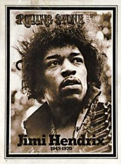
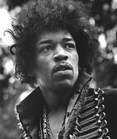

Jim Marshall
From The Giant: The Definitive Obey Giant Site
From Wolfgang's Vault:
Regarded by many as "THE rock and roll photographer," Jim Marshall's career has always been focused on the documentation of people. A son of San Francisco, Marshall's favorite subjects were musicians, and his 40-years of extraordinary photography include very special shots of Mick Jagger, Jimi Hendrix, Carlos Santana, Janis Joplin and other stars in the rock music hegemony. Unlimited access to the musicians coupled with an inviolate sense of trust between subject and photographer allowed Marshall special opportunities: he was chief photographer at Woodstock and was the only photographer allowed backstage at the Beatles final concert. Since he demanded total access, Marshall lived 24-7 with his subjects, and his pictures reflect affection for the artists as they describe the musicians' character. Marshall has said that it's no accident if his pictures seem musical because, "I see the music."
From Jim Marshall's Website:
About Jim Marshall In the Beginning... there was Light.
And Jim Marshall saw the Light... and what he's done with it changed forever the face of modern photography.
Jim Marshall can loose a stream of highly specific invective in the same breath as a modest bon mot, thus nixing any serious link between Marshall and light with a capital 'L,' but his is the unerring eye, passion and skill in an incredible body of work that coaxes light to caress, kiss and reveal the essence of his subjects. From boyhood, when a camera was his more-than-just-a-toy companion, Marshall and his Leicas have chronicled the worlds of jazz and rock music, protest, pomp and presidents from East to West and beyond. He captured the future-famous in the days when a whole band had to share one motel room and the now-famous when the excess and ennui might seep from the seams of their perfected personae.
Marshall's style reflects the healthy respect, even affection, for his subjects that makes a Marshall candid a study, not a sneak attack. Only through his lens do stars like Janis and Jimi reveal the cautious smiles, pensive moods and flayed souls that their fans saw transformed into raging, screaming train wrecks on stage. And Marshall's photographic honesty and brash style made him a friend and favorite of those and other young stars back in the days before the words 'entourage,' 'access,' and 'manager' poisoned the atmosphere.
At the same time that he chronicled the rise and ruin of a rock and protest rock phenomenon, Marshall's personal life was on a parallel rise, ruin and, thank God, redemption journey. When his tour de force dynamism turned from distinctive to dangerous behavior, Marshall entered a dark period that included divorce, violence and arrest. A re-focused Marshall emerged from the darkness in 1984, however, and his modern-day leitmotiv has changed from 'fix it with fists' to 'see you in court.'
Jim Marshall's personal friends include performers past and present that the rest of the world has only seen through his work, and he has worked on countless assignments for high-class periodicals including Life, The Saturday Evening Post and Newsweek. Lest he be dismissed as merely a talented guy of, immersed in and mesmerized by his times, however, it should be noted that Marshall is the embodiment of stellar photographer cum shrewd business sense. Back in the day when artists and photographers were selling their original work and negatives for a song, he kept control of his work and always demanded control over the usage and distribution of his shots. In a classic row in the sixties, Marshall refused his photographs of Appalachia to his employer at the time, The Saturday Evening Post, because he thought the accompanying article was patronizing.
If Jim Marshall has slowed down at all these days, it's only because he doesn't find shots worthy of his talent. True to his core values, he won't be restricted in his access to his subjects and represents a standard of excellence that the hubris-inflicted can barely comprehend. For all his bravado and expletive-deleted delivery, however, Jim Marshall is remarkably humble when asked about his talent. "It's the camera," he says, "my Leicas." Of course, we all know that's not the half of it.
Jim Marshall shot the cover photograph for the October 15, 1970 issue of Rolling Stone. This cover paid tribute to the recently deceased James Marshall "Jimi" Hendrix (November 27, 1942 – September 18, 1970), and later served as the model for Shepard Fairey's 2004 work Hendrix and a Fairey fine art piece.
|  |
|
|  |
File:4albumhendrix.jpg Shepard Fairey's fine art four-album Hendrix |
{kind=link}
{kind=link}
{kind=link}
{kind=link}
© Copyright |
|---|
| This page contains an image or images of drawings, paintings, photographs, prints, or other two-dimensional works of art, for which the copyright is presumably owned by either the artist who produced the image, the person who commissioned the work, or the heirs thereof. It is believed that the use of low-resolution images of works of art for critical commentary on the work in question, the artistic genre or technique of the work of art, or the school to which the artist belongs on the English-language website thegiant.org, hosted on servers in the United States, qualifies as fair use under United States copyright law. |